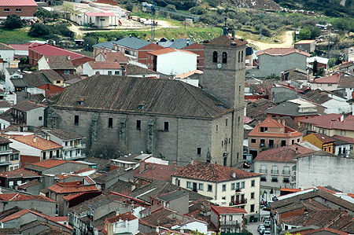

| MONUMENTOS | |||||||
|
|||||||
| LUGARES DE INTERÉS | |||||||
|
En mayo de 1550, a instancias del cura párroco de Cebreros, el Dean y Cabildo de la Catedral de Ávila, pensaron en la conveniencia de construir una nueva iglesia en el centro de la localidad. El Cabildo hizo las gestiones oportunas, se eligió como arquitecto a ALONSO DE COVARRUBIAS, vecino de la ciudad de Toledo. Se contrata a los maestros y oficiales canteros, los más expertos en el arte de la piedra, para su construcción. Los cuatro famosos Juanes, JUAN DE AGUIRRE, JUAN DE PLASENCIA, JUAN DE MONDRAGÓN y JUAN CAMPERO. El estilo del templo es herreriano, comparándosele con el de El Escorial. La construcción es de fábrica de sillería de labra. Las dimensiones del templo son: 54,15m de largo, por el exterior, 49,70m de largo, por 26m de ancho y 22m de alto, por el interior; tiene seis columnas interiores con un grosor de 2m; tres naves, un ábside central y una gran torre. Tiene una cúpula central, bóvedas de ladrillo con fajas y recuadros y un coro en alto, a los pies de la iglesia, sobre bóveda nervada y franqueada por una torre, y que según los planos deberían haber sido dos, no conociendo la razón por la cual no se llegó a construir la otra torre. Tiene tres portadas exteriores y una interior que da paso a la sacristía. Exteriormente su aspecto es pobre y liso, sin adornos; a la derecha se alza orgullosa la torre y junto a ella la portada central, agregada en 1659. En esta portada se encuentra una hornacina, con la imagen labrada en granito, del Apóstol Santiago; la hornacina está remada con una cruz, con unos pináculos y bolas. La portada orientada al norte tiene un arco, dos columnas jónicas con capiteles sobre los que descansa un friso, pilastras y un entablamento, adornada en los netos de los pedestales con la flor de lis. La portada meridional es corintia, con friso rematado por un tímpano con discos convexos, en los tres vértices tres pináculos con esferas atravesadas y ménsula en la clave y frontón. La torre de planta cuadrada consta de tres cuerpos y campanario. Tres ventanas, una al sur y dos al oeste. Está rematada por una veleta asentada sobre una pilastra cuadrada a modo de chapitel, acabada en una aguja construida por una esfera sobre plinto. Otra construcción de granito sobre el tejado a modo de espadaña, son dos pilastras cuadradas, unidas en su parte superior por un bloque cuadrado, rematado en ambos extrememos por unas pequeñas pirámides. En la torre se encuentra el campanario, con siete campanas dentro de unos ventanales de medio punto. Interiormente la iglesia contiene esculturas y pinturas siendo consideradas como grandes tesoros artísticos. Retablo principal o del Altar Mayor es de madera tallada y dorada con pan de oro. Consta de tres cuerpos clásicos y la cumbrera; el primero y segundo cuerpo consta de cinco calles, el tercero de tres. Las entrecalles están formadas por columnas estriadas doradas. Hay un letrero debajo de las hornacinas de los extremos con esta inscripción “Bartolomé Sánchez del Santo, Oficio e Inés Fernández Alía su mujer, vecinos y naturales de esta villa, hicieron a toda costa este retablo; acabóse de dorar y pintar año de 1625”. Destacan: en el primer cuerpo de la calle central El Tabernáculo o Sagrario, el Expositor, en el segundo cuerpo una talla en madera policromada de Santiago Apóstol, en el tercer cuerpo también en madera policromada la talla Ntra. Sra. de la Asunción, en la cumbrera o remate superior El Cristo del Calvario. En las calles de los extremos se encuentran cuatro hornacinas de medio punto con cuatro tallas policromadas de San Pedro, San Juan Evangelista, San Pablo y San Bernardo, todas restauradas. A ambos lados de la calle central, se sitúan los cuadros pintados por José Leonardo, gran admirador de Velásquez, pintor de las escuelas castellanas formado en el manierismo italiano. Estos cuadros de grandes dimensiones son: “Adoración de los Pastores”, “Epifanía”, “Predicación”, “Martirio de Santiago”, “Santa Cena” y “Ascensión”. Los diez cuadros más pequeños de la predera: “Santo Tomás”, “San Lorenzo”, “Santa Apolonia”, “San Lucas y San Juan”, “San Antonio y El Arcángel San Gabriel”, otro representaba a “Santa Magdalena y Santa Catalina” actualmente desaparecido, “San Mateo y San Marcos”, “Santa Teresa”, “Santa Lucia” y “Santa Isabel de Hungría” que vino a sustituir a otro desaparecido y que representaba a un Obispo. El retablo de la derecha está dedicado a La Inmaculada Concepción de María, de estilo manierista, en madera dorada; en el centro del primer cuerpo se encuentra una hornacina de medio punto con la imagen de La Inmaculada. El retablo de la izquierda también del mismo estilo, destaca una hornacina central con la imagen del Sagrado Corazón de Jesús. En las capillas laterales se conservan dos retablos, uno dedicado a San Antonio, de estilo barroco, de decoración vegetal y perfectamente dorado; en la otra capilla existe un retablo traído del antiguo Convento de Los Franciscanos. La iglesia parroquial de Santiago fue declarada bien de interés cultural con la categoría de monumento el 17 de octubre de 1991 
 |
||